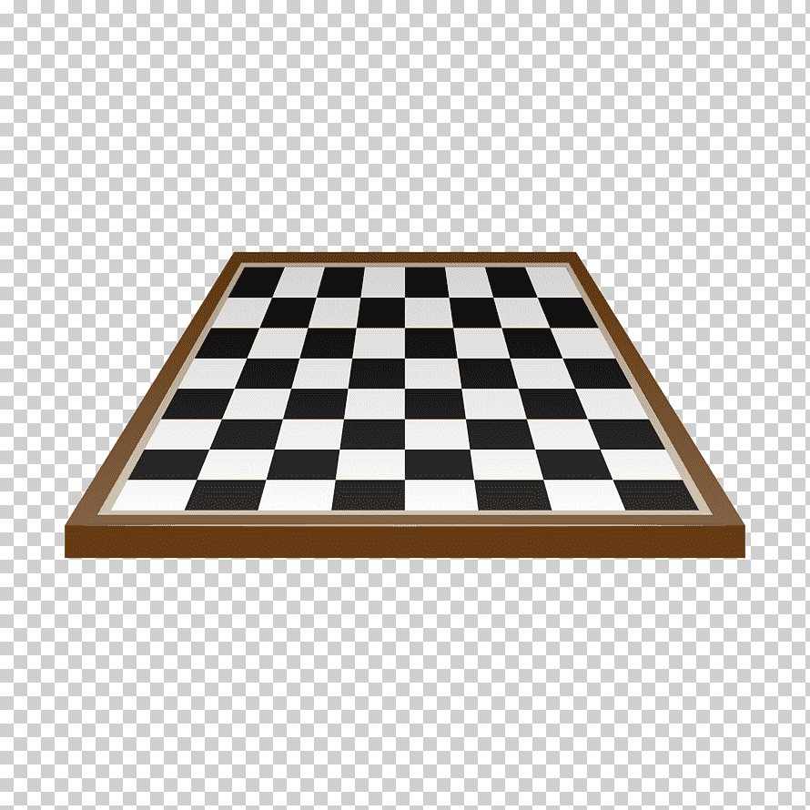

|  | Tablero Ajedrez |
|---|
Descripción:La reina es la pieza más poderosa en el ajedrez debido a su capacidad para combinar los movimientos de la torre y el alfil, lo que le permite dominar grandes áreas del tablero. |
La reina puede moverse cualquier número de casillas en línea recta (como la torre) o en diagonal (como el alfil), siempre que no haya piezas bloqueando su camino. Esto significa que puede moverse: Horizontalmente (a lo largo de una fila). Verticalmente (a lo largo de una columna). Diagonalmente (en ambas direcciones).
La reina captura de la misma manera en que se mueve: llega a la casilla ocupada por una pieza enemiga y la elimina. No puede saltar sobre otras piezas.
No puede saltar sobre piezas amigas ni enemigas. Su movimiento se detiene antes de una pieza bloqueadora o en la casilla de la captura.
| Regresar |
|---|